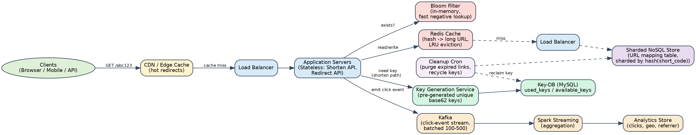
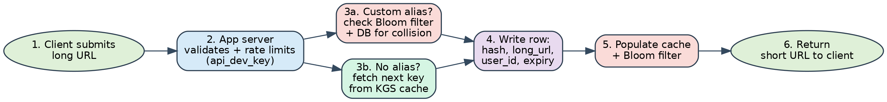
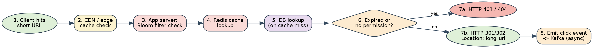

Design a URL Shortener (like TinyURL / bit.ly)
A complete, interview-ready design walkthrough: requirements, capacity estimation, API & data model, architecture, key-generation trade-offs, caching & sharding, security & abuse prevention, and follow-up interview questions.
Problem Statement
Design a URL shortening service like TinyURL. Given a long URL, the service generates a much shorter alias (a "short link"). When a user visits the short link, the service redirects them to the original, full-length URL. Comparable real-world services include bit.ly, ow.ly, t.co, and the now-retired goo.gl.
Why does this problem matter in an interview?
It looks simple on the surface ("just store a key → value mapping"), which is exactly why it's a popular screening question — it rewards candidates who probe the read/write skew, think about uniqueness and collisions, and reason about caching, sharding, and failure modes, while punishing candidates who jump straight to a database schema.
Why do people use a URL shortener?
- Shorter links are easier to share, print, message, or paste into character-limited fields.
- Users are less likely to mistype a short link than a long one.
- Shortened links can be swapped without changing the printed/shared reference — useful for tracking campaign performance or fixing a broken destination.
- Click analytics (who clicked, when, from where) support marketing and product use cases.
Clarifying Questions to Ask the Interviewer
Always clarify scope before designing. A strong candidate spends the first 3–5 minutes narrowing the problem rather than assuming defaults.
- What scale are we targeting — how many new URLs per day/month, and how many redirects?
- Can users choose a custom alias (vanity URL), or are all short codes system-generated?
- Do links expire? Is there a default TTL, and can users override it?
- Do we need user accounts / authentication, or can anonymous users shorten URLs too?
- Do we need click analytics (count, geography, referrer, device)?
- Should the service expose a public REST API for third-party integrations?
- Is strong consistency required (e.g. a link must be resolvable immediately after creation), or is eventual consistency acceptable?
- Do we need to support private/permissioned links, or are all links public once created?
- Any requirement to screen destination URLs for phishing/malware (safe-browsing)?
- Single region or multi-region / global low-latency redirects?
Requirements and Goals
Functional Requirements
- Given a long URL, generate a shorter, unique alias ("short link") that can be easily copied, pasted, and shared.
- When a user opens a short link, redirect them to the original long URL.
- Allow users to optionally choose a custom alias for their URL (vanity links).
- Links expire after a default timespan; users may optionally specify their own expiration date.
- (Extended) Allow the owner to view analytics for a link (click count, timeline, referrers, geography).
- (Extended) Allow the owner to delete / deactivate a link before it naturally expires.
- (Extended) Expose the shortening and redirect functionality through a public REST API.
Non-Functional Requirements
- High availability: the redirect path is on the critical path of every link the service has ever issued — if it goes down, every shared link everywhere breaks at once.
- Low latency redirection: users should perceive the redirect as effectively instant (target: well under 100 ms server-side).
- Short links should not be easily guessable or sequentially enumerable, to stop scraping of the entire URL corpus and to avoid leaking creation order/volume.
- Uniqueness: no two different long URLs may ever resolve from the same short code, and a short code, once issued, must not be reissued to a different URL while still active.
- Durability: a created link must survive server/DB failures until its expiration.
- Horizontal scalability: the system must scale independently on the read side (redirects) and the write side (shortens), since the two have very different volumes.
Extended / Out-of-Scope
For this design we'll go deep on the shortening + redirect + caching + partitioning core, and touch on analytics, rate-limiting and security. We explicitly call out — but don't build — the internals of a full user-authentication system, an ML-based phishing classifier, or a billing system, since these are large sub-systems of their own.
Capacity Estimation and Constraints
This system is heavily read-skewed: far more people click a short link than create one. We'll assume a 100:1 read/write ratio, which is a standard, defensible assumption for this class of service — state it explicitly and adjust the rest of the math from there.
Traffic Estimates
Redirects / month = 100 × 500M = 50 billion
New URLs / second = 500,000,000 ÷ (30 × 24 × 3600) ≈ 193 → round to ~200 writes/sec
Redirects / second = 100 × 200 = ~20,000 reads/sec (20K QPS)
Peak traffic runs 2–3× average → design for ~50–60K peak read QPS and ~500–600 peak write QPS.
Storage Estimates
Total objects stored = 500M × 12 months × 5 years = 30 billion records
Raw storage = 30 billion × 500 bytes = 15 TB
With 3× replication for durability/availability, plan for ≈ 45 TB of physical storage, plus headroom for indexes.
Bandwidth Estimates
Outgoing (reads): 20,000/sec × 500 bytes ≈ 10 MB/sec (excluding HTTP/TLS overhead)
Memory / Cache Estimates
Applying the 80/20 rule (20% of links generate 80% of traffic), we want to cache the hottest 20% of daily reads.
20% of daily redirects ≈ 345 million requests — but many of these are repeat hits on the same small set of hot links, so the number of distinct hot keys is far smaller
Cache size ≈ 0.2 × 1.73B × 500 bytes ≈ 173 GB (upper bound; real usage is lower due to duplicate hits)
≈175 GB fits comfortably across a small Redis cluster (e.g. 3 primary shards × 2 replicas), which is preferable to a single large box for availability during failover and rolling upgrades.
Short-Code Length (Keyspace)
Using a base62 alphabet ([a-z, A-Z, 0-9] = 62 symbols), the keyspace grows as 62n for an n-character code. We need enough headroom to cover 30 billion stored objects with room to grow for years without re-architecting.
| Code length (n) | Keyspace (62ⁿ) | Verdict for 30B records over 5 yrs |
|---|---|---|
| 5 | ≈ 916 million | Too small — exhausted almost immediately |
| 6 | ≈ 56.8 billion | Workable, but thin margin as volume grows |
| 7 | ≈ 3.5 trillion | Recommended — ~115× headroom over 30B, safe for a decade+ |
| 8 | ≈ 218 trillion | Overkill for this scale; longer than needed |
High-Level Estimate Summary
| Metric | Value |
|---|---|
| New URLs / sec | ~200 |
| Redirects / sec | ~20,000 (peak ~50–60K) |
| Incoming bandwidth | ~100 KB/sec |
| Outgoing bandwidth | ~10 MB/sec |
| Storage (5 yrs, 3× replicated) | ~45 TB |
| Cache memory (hot set) | ~175 GB |
| Recommended short-code length | 7 characters (base62) |
System / API Design
A REST API is preferred over SOAP here: it's simpler, stateless, and maps naturally onto HTTP semantics — the redirect endpoint in particular piggybacks directly on HTTP's own redirect status codes and caching headers.
Create a Short URL
POST /api/v1/shorten
Request body:
{
"long_url": string, // required
"custom_alias": string, // optional, max 16 chars
"expire_at": string, // optional ISO-8601 timestamp
"visibility": "public" | "private", // optional, default public
"api_key": string // required — identifies caller, used for quota
}
Response 201 Created:
{ "short_url": "https://tiny.url/aB3xQ9z", "expire_at": "2028-07-16T00:00:00Z" }
Errors: 400 invalid URL · 409 alias already taken · 401 unauthenticated · 429 rate-limitedRedirect
GET /{short_code}
Success -> HTTP 301/302, Location: <original long URL> (see "301 vs. 302" below)
Not found -> HTTP 404
Expired -> HTTP 410 Gone
No permission (private link) -> HTTP 401 / 403Delete a Short URL
DELETE /api/v1/urls/{short_code}
Auth: must be the owning user (or an admin)
Response 200: { "status": "removed" }Analytics (Extended)
GET /api/v1/urls/{short_code}/stats
Response 200:
{
"total_clicks": 48213,
"clicks_by_day": [ ... ],
"top_referrers": [ ... ],
"top_countries": [ ... ]
}api_key, which is throttled to N creations and M redirects per time window (see "Rate Limiting and Abuse Prevention" below).
Data Model and Database Choice
Nature of the Data
- Billions of rows, growing linearly with usage.
- Each object is small (well under 1 KB): a short code, a long URL, and a handful of metadata fields.
- Virtually no relationships between records beyond "which user created this link" — no joins needed on the hot path.
- The workload is overwhelmingly read-heavy (100:1) and is a pure key lookup by short code.
These properties — huge volume, tiny objects, no joins, simple key-based access — are the textbook case for a NoSQL key-value / wide-column store over a traditional relational database for the primary URL-mapping table.
Core Schema
| Table: url_mapping | |
|---|---|
| short_code (PK) | varchar(16) |
| long_url | varchar(2048) |
| user_id (nullable, FK) | bigint |
| created_at | datetime |
| expires_at (nullable) | datetime |
| is_custom_alias | boolean |
| visibility | enum(public, private) |
| click_count (denormalized, async-updated) | bigint |
| Table: user | |
|---|---|
| user_id (PK) | bigint |
| name | varchar(64) |
| varchar(128) | |
| created_at / last_login | datetime |
| plan / tier (drives rate-limit quota) | varchar(16) |
| Table: url_permission (only if private links supported) | |
|---|---|
| short_code + user_id (composite PK) | varchar(16) + bigint |
| granted_at | datetime |
SQL vs. NoSQL — the Recommended Hybrid
The main url_mapping table should live in a horizontally-scalable NoSQL store (e.g. DynamoDB, Cassandra, or MongoDB — the choice among these is largely about ops/ecosystem preference, since access patterns are simple key lookups all three handle well). It needs to scale to tens of billions of rows and tens of thousands of QPS with simple partition-by-key access — exactly NoSQL's sweet spot, and it sidesteps the operational pain of manually sharding a relational database at this scale.
The Key Generation Service's key pool (see below, Approach C), however, is a small, low-volume dataset that absolutely must never hand out the same key twice — a textbook case for strict ACID transactions. Keep that piece on a conventional relational database (MySQL/Postgres) even though the bulk data plane is NoSQL. This "SQL for the coordination-heavy control plane, NoSQL for the bulk data plane" split mirrors how several production systems are actually built.
High-Level Design
Clients talk to a CDN / edge cache first (so repeat hits on very hot links never even reach our infrastructure), then a load balancer, then a fleet of stateless application servers exposing the Shorten and Redirect APIs. Application servers check an in-memory Bloom filter and a Redis cache before falling back to a horizontally-sharded NoSQL store. A separate Key Generation Service (backed by a small ACID-compliant MySQL key pool) supplies unique short codes. Click events are emitted asynchronously to Kafka, aggregated by Spark Streaming, and landed in an analytics store — fully decoupled from the low-latency redirect path. A lightweight cleanup cron reclaims expired links and their keys.

Key Design Principles Reflected in the Diagram
- Stateless application servers: any server can handle any request, which makes horizontal scaling and load balancing trivial.
- Read path and write path share the app tier but fan out to different downstream dependencies (cache/DB vs. KGS), so they can be scaled independently.
- Everything that isn't strictly needed to answer "where does this redirect go?" (analytics, cleanup) is pushed off the critical path and handled asynchronously.
- Multiple layers of defense before hitting the database: CDN → Bloom filter → Redis cache → sharded DB — each layer absorbs load so only genuine cache misses reach storage.
Deep Dive — Generating the Short Code
This is the crux of the interview. The last 7 characters of https://tiny.url/aB3xQ9z are the "key" we need to generate — unique, short, and not easily guessable. There are four common approaches; a strong candidate can compare all four and pick one with clear reasoning.
Approach A — Hash the Long URL, then Base62-Encode
Compute MD5/SHA-256 of the input (optionally salted with a sequence number or user ID to prevent two identical URLs from colliding on the exact same hash), then Base62/Base64-encode the result and truncate to n characters.
- Pros: stateless — no shared counter or coordination service required.
- Cons: truncating a cryptographic hash reintroduces collisions (defeats the point of using a strong hash); needs a DB uniqueness check + retry loop anyway; if left unsalted, it's deterministic and therefore guessable/reversible by an attacker who hashes candidate URLs; URL-encoding differences (e.g.
?id=designvs%3Fid%3Ddesign) must be normalized first or "identical" URLs get different codes.
Approach B — Auto-Increment Counter, Base62-Encode the ID
Use a database auto-increment primary key as the source of uniqueness, and convert that integer to a Base62 string for display.
- Pros: trivially unique, simple to implement and reason about.
- Cons: sequential and therefore enumerable — a competitor can scrape your entire URL corpus by iterating IDs, and the growth rate of your business leaks through link volume; a single counter is a write bottleneck and single point of failure unless you shard it (e.g. reserve disjoint ID ranges per shard/node).
Approach C — Pre-Generated Key Generation Service (KGS) — Recommended Default
A standalone service pre-generates random, unique Base62 strings offline and stores them in a small coordination datastore split into two tables — available_keys and used_keys. Application servers check out a batch of keys (e.g. 10,000 at a time) into local memory and hand them out to writers one at a time; once a batch is checked out it's immediately moved to used_keys inside a transaction, so two app servers can never receive overlapping keys. A trigger/watermark (e.g. "available_keys below 30%") fires the generator to bulk-mint the next ~1 million keys ahead of demand.

- Pros: no runtime hashing or collision retries; keys look random (not guessable/sequential); very fast on the write path (just "pop a pre-made key").
- Cons: one more service to build, run, and monitor; if an app server crashes holding an unused batch, those keys are wasted (acceptable — 627 ≈ 3.5 trillion keys, losing a few thousand is noise); the KGS/key-DB needs a hot standby replica so it isn't a single point of failure.
Approach D — Distributed ID Generators (Zookeeper-Coordinated Ranges, or Snowflake)
For very large, multi-region deployments: use Zookeeper/etcd to atomically hand out disjoint numeric ranges (e.g. blocks of 1,000 IDs) to each node, or generate Twitter Snowflake-style 64-bit IDs locally (timestamp + datacenter/worker ID + sequence number) with zero per-request coordination, then Base62-encode the result.
- Pros: no central write bottleneck; scales cleanly across regions/data centers; Snowflake IDs need no shared state at request time at all.
- Cons: added operational complexity (running Zookeeper/etcd); Snowflake is sensitive to clock skew across nodes; encoded IDs tend to be a bit longer than a purpose-built KGS key.
Comparison
| Approach | Uniqueness | Guessable? | Coordination cost | Best fit |
|---|---|---|---|---|
| A. Hash + encode | Needs DB check + retry | Yes, if unsalted | Low | Simple/low-scale prototypes |
| B. Counter + Base62 | Guaranteed | Yes (sequential) | Medium (sharded counters) | Internal tools, not public-facing |
| C. Offline KGS (recommended) | Guaranteed | No (random) | Low (batch checkout) | Most production URL shorteners |
| D. Zookeeper / Snowflake | Guaranteed | No, if randomized post-encode | Medium-High (extra infra) | Multi-region, very large scale |
Regardless of approach, keep a uniqueness constraint (conditional write / unique index) at the database layer as a last line of defense against any residual collision.
Deep Dive — Write Path (Shortening a URL)

- Client submits a long URL (optionally a custom alias and/or expiration date) along with its
api_key. - The application server validates the URL, authenticates the caller, and checks the caller's rate-limit quota.
- If a custom alias was requested: check the Bloom filter, then the database, to make sure it isn't already taken. If no alias was requested: pull the next available key from the app server's local KGS cache.
- Write a new row:
{short_code, long_url, user_id, created_at, expires_at}. - Populate the Redis cache and add the new code to the Bloom filter so subsequent redirects are served from the fast path immediately.
- Return the fully-formed short URL to the client.
Note that step 4 is the only step that must be strongly consistent — a duplicate or lost key here is a correctness bug, not just a performance hiccup. Everything downstream (cache population, analytics) can be eventually consistent.
Deep Dive — Read Path (Resolving / Redirecting)

- Client requests the short URL.
- CDN / edge cache is checked first; a hit short-circuits the entire request (huge win for viral links).
- On a miss, the application server checks the Bloom filter: a "definitely not present" answer returns 404 immediately without touching Redis or the DB — this is what protects the backend from bots/scanners probing random codes.
- On a "maybe present" answer, check the Redis cache.
- On a cache miss, fall through to the sharded database, then repopulate the cache.
- Check whether the link has expired or the caller lacks permission (private link) — if so, return 410 Gone or 401/403.
- Otherwise, issue an HTTP redirect (301 or 302 — see below) with
Locationset to the long URL. - Asynchronously emit a click event to Kafka for analytics — this never blocks the redirect response.
301 vs. 302 — a Genuine Trade-Off, Not a Right/Wrong Answer
| 301 (Moved Permanently) | 302 / 307 (Temporary) | |
|---|---|---|
| Browser caching | Cached by the browser — repeat clicks never hit our servers again | Not cached by default — every click re-hits our service |
| Server load | Lower — only the first click per browser reaches us | Higher — mitigated by CDN/Redis caching |
| Click analytics | Broken after the first click (we never see subsequent clicks) | Accurate — every click is observable |
| Ability to change/revoke destination later | Poor — clients may keep using their cached mapping | Full control — we can always re-point or expire a link |
Recommendation: use 302 (or 307 to preserve the HTTP method) since click analytics and the ability to revoke/expire/re-point a link are explicit product requirements here. Offload the resulting extra load with short-TTL CDN edge caching (e.g. 30–60 seconds) as a middle ground — this still lets a viral link's redirect be served from the edge without fully losing click visibility. Reserve 301 for an opt-in "permanent vanity link, no analytics needed" tier if the product wants to offer it.
Deep Dive — Caching Strategy
Redis Cache (Cache-Aside)
- Pattern: application server checks Redis first; on a miss it reads the database and populates the cache before responding.
- Eviction policy: Least Recently Used (LRU) — Redis's built-in
allkeys-lrupolicy is a direct production equivalent of the LinkedHashMap-based LRU often described in textbooks. - Sizing: ~175 GB (see capacity estimation above) fits on a small Redis Cluster — e.g. 3 primary shards with a replica each — rather than one large box, so a single node failure doesn't take the whole cache down mid-failover.
- Cache warm-up: on deploy or failover, a cold cache briefly increases DB load; mitigate with cache replication (a replica takes over instantly) and/or a brief pre-warm of the historically-hottest keys.
Bloom Filter for Fast Negative Lookups
A Bloom filter is a compact, probabilistic set membership structure: a "no" answer is 100% certain (the key is definitely not present), while a "yes" answer only means "maybe present" (false positives are possible, false negatives are not). Keeping a Bloom filter of all active short codes in front of the cache/DB lets the redirect path reject nonexistent codes — the bulk of scanner/bot traffic — almost for free, without a single cache or DB round-trip.


Worked sizing example: for roughly 40 million entries at a reasonable false-positive rate, a bit array of about 159 MB with k ≈ 25 hash functions is sufficient. For the full ~30 billion-record corpus, shard the Bloom filter alongside the database shards (one filter per shard, sized proportionally) rather than maintaining one filter for the entire keyspace.
CDN Edge Caching
For the hottest links (a viral tweet, a marketing campaign), front the redirect endpoint with a CDN caching the 301/302 response at the edge for a short TTL. This absorbs traffic spikes before they ever reach the application tier, at the cost of a short analytics blind-spot for cached hits (bounded by the TTL).
Data Partitioning and Replication
Range-Based (e.g. First Letter of the Short Code)
Simple to reason about, but prone to unbalanced shards — if unusually many keys happen to start with a particular letter (or a KGS batch is skewed), that shard becomes a hotspot while others sit idle.
Hash-Based (Recommended)
Hash the short code and use the hash to pick a shard — this distributes keys uniformly and independently of any pattern in the codes themselves. To avoid a full data reshuffle every time a shard is added or removed, use consistent hashing so only a small, bounded fraction of keys move when the cluster resizes.
Replication
- Each shard is replicated (e.g. 3×) across availability zones for durability and to survive a node/AZ failure.
- Read replicas absorb the 100:1 read skew, letting redirect traffic scale horizontally without adding write capacity.
- Writes go to the primary of a shard; reads can be served from any in-sync replica, trading a small staleness window for much higher read throughput.
Deep Dive — Analytics Pipeline
Click tracking must never sit on the redirect's latency budget. The application server emits a fire-and-forget click event (short code, timestamp, referrer, user agent, source IP/geo) to Kafka immediately after issuing the redirect.
- Kafka absorbs bursty write volume and decouples producers (app servers) from consumers (the analytics pipeline); events are batched (e.g. 100–500 per batch) to cut I/O overhead.
- Losing a small number of click events on a consumer crash is an acceptable trade — Kafka is not the source of truth for the URL mapping itself, only for derived analytics.
- A stream processor (Spark Streaming or Flink) consumes the topic and aggregates click counts, geography (IP → country), referrer, and device/browser into a separate analytics store (e.g. a columnar warehouse), which powers the stats API and any dashboards.
- Keeping this pipeline fully decoupled from the serving path means an analytics outage or backlog never affects redirect availability or latency.
Rate Limiting and Abuse Prevention
Without controls, a single bad actor could exhaust the keyspace with mass-generated links, scrape the entire URL corpus, or DDoS the redirect endpoint.
- Every API call is scoped to an
api_key; enforce a token-bucket quota per key (e.g. N shortenings/minute, M redirects/minute), with limits tunable per account tier. - Enforce the limit at the load balancer / API gateway layer so rejected requests never reach application servers.
- Return HTTP 429 Too Many Requests with a
Retry-Afterheader when a caller exceeds quota. - Separate, more generous limits for the (largely anonymous, very high-volume) redirect path vs. the (authenticated, lower-volume) shorten path.
Security, Privacy and Permissions
- Public vs. private visibility: store a visibility flag per link; private links check the
url_permissiontable and return 401/403 to unauthorized callers. - Malicious destination screening: check submitted long URLs against a safe-browsing / threat-intel blocklist (e.g. Google Safe Browsing) at creation time, and periodically re-scan existing links, so the service isn't co-opted as a phishing or malware redirector.
- Input validation: reject unsupported URL schemes (e.g.
javascript:), enforce a maximum long-URL length, and normalize URL-encoding (%3Fvs?) before hashing/dedup so semantically-identical URLs aren't treated as different. - Transport security: TLS everywhere; for particularly sensitive private links, consider short-lived signed URLs in addition to the permission table.
- Non-guessability: this is also a security property, not just a UX one — Approach C/D key generation is deliberately chosen so the short-code space can't be enumerated to discover other users' private content.
Expiration and Database Cleanup
- Apply a default TTL (e.g. 2 years) if the user doesn't specify one.
- Lazy deletion: when an expired link is accessed, delete it on the spot and return 410 Gone — this avoids constant background scanning purely to catch expirations nobody will ever hit.
- A lightweight Cleanup Cron job runs periodically during low-traffic windows to sweep expired rows out of the database, the Redis cache, and the Bloom filter (or trigger a filter rebuild), independent of whether anyone happened to click them.
- After removing an expired link, return its short code to the KGS's
available_keyspool so it can be reused — the keyspace is finite (if enormous), so recycling matters over a long enough time horizon.
Load Balancing
A load-balancing layer sits at three points in the system:
- Between clients and application servers.
- Between application servers and the database shards.
- Between application servers and the cache tier.
Start with simple round-robin — cheap, introduces no real overhead, and automatically drains traffic away from a server that fails its health check. If servers show uneven load (e.g. due to a few unusually hot keys pinning specific shards), evolve to a least-connections or latency-weighted balancing strategy.
Scaling to Multiple Regions
- Run each region active-active with its own application tier, cache, and database replica set, so redirects are always served from the region closest to the requester (via Geo-DNS or anycast) for the lowest possible latency.
- Use Approach D ID generation (Zookeeper-assigned ranges or Snowflake IDs) so two regions can mint keys concurrently without a cross-region write on every single request.
- Replicate the URL table across regions asynchronously; eventual consistency is acceptable here since a newly-created link is normally read back from the same region it was written in, and full propagation to other regions within a few seconds is a non-issue for correctness.
- Analytics pipelines (Kafka/Spark) can run per-region and roll up into a global analytics store on a slower cadence — there's no reason clickstream aggregation needs to be synchronous across regions.
Bottlenecks, Single Points of Failure, and Trade-Offs
| Risk / Bottleneck | Mitigation |
|---|---|
| Key Generation Service / key-DB down | Hot standby replica; app servers hold a local batch of pre-fetched keys so a brief KGS outage doesn't stall writes |
| A single viral link overwhelms one shard/cache node | CDN edge caching + cache replication absorb spikes before they reach the DB shard |
| Cache node failure | Redis Cluster with replicas per shard; cache-aside pattern degrades gracefully to the DB on a miss |
| Sequential/guessable short codes | Use KGS-style random key issuance (Approach C/D), not a raw incrementing counter (Approach B) |
| Central write bottleneck (single counter/DB) | Batch key checkout, sharded/partitioned writes, consistent hashing |
| Analytics backlog affecting redirects | Fully async (Kafka) — analytics failure/lag never blocks or slows the redirect response |
| Region-wide outage | Multi-region active-active with independent ID generation |
CAP Theorem Lens
Favor availability + partition tolerance (AP) on the read/redirect path — serving a slightly stale cached mapping is far better than a broken link, and links rarely change once created. Favor consistency (C) on the write path for key allocation specifically — the system must never hand out the same short code to two different URLs, even at the cost of a brief write-side retry under contention.
One-Page Design Summary
| Dimension | Recommended choice |
|---|---|
| Short code alphabet / length | Base62, 7 characters (≈3.5 trillion keyspace) |
| Key generation | Offline Key Generation Service (available/used key tables); Zookeeper/Snowflake if multi-region |
| Primary datastore | Sharded NoSQL (Cassandra / DynamoDB / MongoDB) for url_mapping; small ACID SQL store for the KGS key pool |
| Partitioning | Hash-based with consistent hashing |
| Caching | Redis Cluster (cache-aside, LRU) + Bloom filter for negative lookups + CDN edge cache for hot links |
| Redirect status code | 302/307 (accurate analytics + revocability), CDN-cached with a short TTL |
| Analytics | Async via Kafka → Spark Streaming → analytics store |
| Abuse prevention | Per-api_key token-bucket rate limiting, HTTP 429 |
| Cleanup | Lazy delete on access + periodic low-traffic cron; keys recycled back to KGS |
| Consistency model | AP for reads/redirects, strict consistency for key allocation |
Common Interview Questions
Beyond the core design, interviewers love to pressure-test one component at a time. These are organized by theme — use them to rehearse, or expect a real interview to pick 3–5 of these as "and then what?" follow-ups.
Scaling and Performance
Correctness and Data
Product and API Design
Security and Abuse
Reliability and Operations
Extensions
Key Takeaways
References
- Educative — "Grokking the System Design Interview": Designing a URL Shortening Service like TinyURL (course material)
- Shashi Bhushan Kumar, "Design URL Shortening service like TinyURL" (LeetCode Discuss)
- GeeksforGeeks, "How to Design a Tiny URL or URL Shortener"
- Gainlo, "System Design Interview Question: Create TinyURL System"
- Community write-ups on distributed ID generation for URL shorteners (ZooKeeper-coordinated counter ranges, Twitter Snowflake, Base62 encoding)